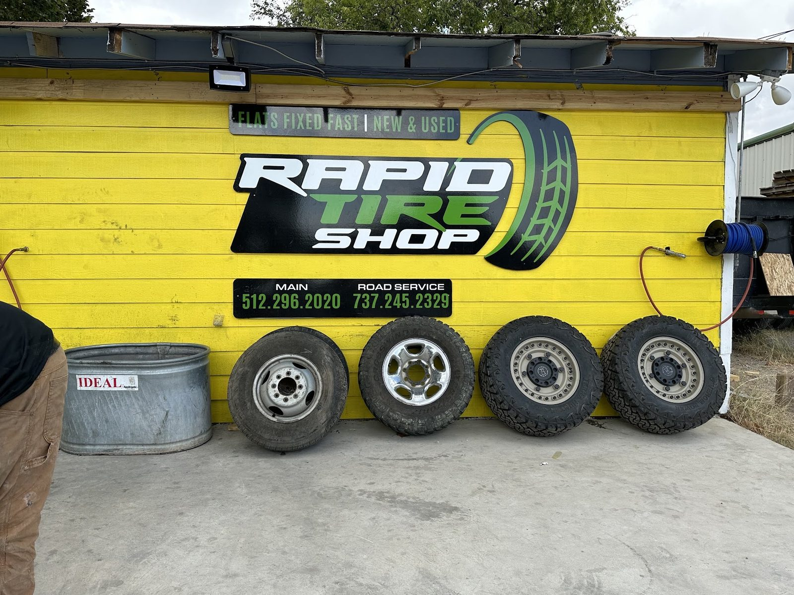

Flat tire repair
Nail or screw? We patch it from the inside, air it up and put it back on the car. Often in about 10 minutes.
- Nail
- Screw
- Patch from inside
- Air up
Tire shop · Sam Bass Rd, Round Rock
Nail or screw in your tire? Patched, aired up and back on the car in about 10 minutes.
4.7180 Google reviews

Open Sundays
Around the shop


What we do
Flats, installs, new and used tires, in the yellow shop on Sam Bass Rd.
Nail or screw? We patch it from the inside, air it up and put it back on the car. Often in about 10 minutes.
New tires mounted and fitted, for cars and trucks.
The sign out front says it: flats fixed fast, new and used. Racks of tires wait in the bay.
Stripped or missing lug nut or stud? We replace it and check the work until it's right.
Big truck tires, such as 37x12.50r17, fitted after a fit check.
The sign lists a separate road service line. Call the shop to ask what it covers.
What drivers say
4.7180 Google reviews
“Amazing service and price! Pulled up with a flat tire from a nail and they patched my tire from the inside in less than 10 minutes. I didnt even have to get out of the car!”
“Had a screw in my tire and decided to take it here based on reviews. The guys who helped me were professional & quick, and the service was very reasonably priced. Took about 10 minutes and they had diagnosed the problem, patched the tire, aired it up & put it back on my car. Highly recommend to anyone in the area!!”
“These gentlemen came in clutch for me, drove to Austin from west texas to pick up some tires and visit family. Tried a "big name" competitors shop for installation first and the guy outright said he didn't have time, with no cars in the bay and an hour before close.. anyway..”
Who we are
The bright yellow building with a green tire swoosh on the sign. Inside: a tire changer, racks of tires and floor jacks.
Friendly, professional staff who take the time to get the job done right. Open Sundays too.

Find us
906 Sam Bass Rd, Round Rock, TX 78681
Look for the yellow building with the green tire on the sign. Walk in, or call first.